Lesson 14 · Part 1 · Models and safety · 5 questions
Frontier vs open-weight models
Read first: Tokens and the context window
An open-weight model is one whose trained numbers you can download and run anywhere: your laptop, your cloud account, a server with no internet. That gives you control over privacy, versions and cost, but the best open models still trail the best closed ones, and the gap is widest on long agentic tasks.
The idea
Think of a program you can download as a binary but not as source code. You can run it on any machine, keep the old version forever, and even patch it. What you can't do is rebuild it from scratch or see exactly what went into it.
Open weights work like that binary. A model is code plus weights: billions of numbers set during training. Training is the build step, and the training data is most of the source. Models come in three levels of openness:
- Closed (API only). You send tokens to the vendor's endpoint and get tokens back. The weights never leave the vendor. Today's frontier models, the most capable ones at any moment, are in this group.
- Open weights. You can download the weight files under a licence and run them anywhere. The training data and full training code usually stay private.
- Open source AI. Weights, the complete training code, and enough detail about the training data to rebuild the model, all under terms that let anyone use, study, change and share it.

The third level has a formal definition. In October 2024 the Open Source Initiative (OSI), the group behind the Open Source Definition for software, published the Open Source AI Definition 1.0. It requires all three parts: data information, code and parameters. Weights alone are not enough. When the OSI tested real models against it, Pythia, OLMo and T5 passed. Llama 2, Grok, Phi-2 and Mixtral didn't, because parts were missing or their licences added restrictions. Most models people call "open source" are open weights.
Up close
Read the licence: it decides what you may do. Open-weight licences range from standard open-source licences to custom ones with conditions. Some current examples, each from the vendor's own model card or licence:
| Model | Licence |
|---|---|
| OpenAI gpt-oss | Apache 2.0 |
| Qwen3-Coder-30B-A3B | Apache 2.0 |
| DeepSeek-V4 | MIT |
| Kimi K2.6 | Modified MIT: show "Kimi K2.6" in your product's UI above 100M monthly users or $20M monthly revenue |
| Llama 4 | Llama 4 Community License: show "Built with Llama", follow an acceptable use policy, and ask Meta first above 700M monthly users |
Your harness barely notices the difference. Open-source model servers such as vLLM serve downloaded weights behind the same chat API shape that OpenAI uses. Start the server, then point your client at it:
# downloads the weights, then
# serves them on port 8000
vllm serve openai/gpt-oss-20b \
--enable-auto-tool-choice \
--tool-call-parser openaifrom openai import OpenAI
# same client, local address
client = OpenAI(
base_url=LOCAL_URL, # :8000/v1
api_key="unused",
)Note the two tool flags. The model writes tool calls as plain text in its own format, and the server has to parse that text into a structured tool call (see Tool calls up close). Get the parser or chat template wrong and the weights are fine, but the tool calls break.
Same weights, different quality. That is not a theoretical risk. In 2025, Moonshot AI published a checker for third-party hosts of its Kimi K2 model, because users reported broken tool calls. In its late-2025 results, Moonshot's own API matched the tool schema every time, while some other setups got it wrong in 1 of 8 to 1 of 6 calls. Picking an open model also means picking who serves it, and testing them.
How far behind?
Epoch AI, a research group that tracks AI progress, combines many benchmarks into one score, the Epoch Capabilities Index. In May 2026 it reported that since January the best open-weight models had trailed the best closed models by an average of four months.
The gap depends on the task. In July 2026 the UK's AI Security Institute tested the strongest open models on cyber-security work. On short, narrow tasks they matched closed models from about 4 months earlier. On long, multi-step attack scenarios the gap was up to about 7 months. The institute calls that second result weaker evidence, because there were fewer scenarios. Simple arithmetic explains why long tasks are harder: if each step goes right 98% of the time, a 60-step task has no mistakes only about 30% of the time (0.9860 ≈ 0.30).
Worked example
Why teams choose one or the other:
| Need | Closed frontier | Open weights |
|---|---|---|
| Best result on a long agentic task | Yes | Months behind |
| Code never leaves our network | Only via contract or your cloud provider | Yes, if you host it yourself |
| Same model in two years | Old versions get retired | Yes, you keep the files |
| Fine-tune on our own data | Limited, vendor-dependent | Yes |
| Nothing to run or patch | Yes | You run the servers |
Cost cuts both ways: many hosts compete to serve the same open weights, which pushes prices down, but running your own GPUs is usually more expensive than an API. That is the subject of Running a model on your own GPU and Why an API is usually cheaper.
Your turn
Question 1 · ~2 min
A colleague says a model is "open source": you can download the weights, but the training data isn't published and the licence forbids some uses. Is it open source?
Show answer
No, it's open weights. Under the OSI's Open Source AI Definition you also need the full training code, enough detail about the training data to rebuild it, and terms that allow any use. You can still run it, keep it and fine-tune it. Just read the licence before you build on it, because that's what legal will ask about.
Question 2 · ~2 min
Your team switches to an open-weight model "for privacy", and calls it through a public inference provider's API. Is your code now private?
Show answer
No more private than before. The provider receives every prompt, just like a closed-model API. The licence of the weights changes nothing about where your tokens go. The privacy benefit comes from where the model runs: on machines you control. Otherwise, the provider's contract and data retention terms matter, as with any API.
Question 3 · ~2 min
You can run a small open model next to your main frontier agent. Which of these would you give it? (a) Shorten 5,000 lines of test output to the failing tests and their errors. (b) Plan a schema change across four services. (c) Tag each incoming alert with the service it belongs to.
Show answer
(a) and (c). They are short, single-step jobs with an answer you can check, and they run often, so a cheap local model pays off. (b) is a long, multi-step task where small mistakes compound, which is exactly where open models lag most. Keep it on the strongest model you're allowed to use.
Question 4 · ~3 min
An open model scores close to a frontier model on a popular coding benchmark. In your 60-step agent session on a real service, it keeps losing track and repeating itself. Why the difference?
Show answer
Short tasks hide the gap. Many benchmark tasks take a few steps. A long session chains dozens of steps, and a small error rate per step grows with each one. Independent tests (such as the UK AI Security Institute's) found open models further behind on long multi-step tasks than on short ones. Judge a model on your own tasks, not on one score.
Question 5 · ~3 min
Stretch: the same open-weight model, same prompt, on two hosts. On host A your agent works. On host B it sometimes calls tools with broken JSON, or answers in text when it should call a tool. The weights are identical. What's different?
Hint
Show answer
The serving stack. The model writes tool calls as text in its own format. The server needs the right chat template and parser to turn that into a structured call, and it may also run a compressed (quantised) copy of the weights. Moonshot AI found exactly this with hosts of Kimi K2 and published a checker for it. Test a host on your own tool calls before you trust it.
Interesting fact: The leak that started the open-model scene
On 24 February 2023, Meta announced LLaMA, a family of models up to 65 billion parameters. Its paper claimed the 13B version beat the 175B GPT-3 on most benchmarks. Access was research-only, granted case by case. On 3 March, about a week later, a torrent of the weights was shared on 4chan, and researchers confirmed the files were genuine. A week after that, on 10 March, Georgi Gerganov published llama.cpp, with the goal "to run the model using 4-bit quantization on a MacBook". His README said it was "hacked in an evening" and "not going to be maintained properly". It became one of the most widely used ways to run models locally. In July 2023, Meta released Llama 2 free for research and commercial use.
Facts checked: November 2026 (OSI Open Source AI Definition 1.0 and FAQ; model cards and licences for gpt-oss, Qwen3-Coder, DeepSeek-V4, Kimi K2.6 and Llama 4; vLLM docs; Moonshot AI K2 Vendor Verifier; Epoch AI, May 2026; UK AI Security Institute, July 2026; Meta's LLaMA announcement and paper; llama.cpp history).
Answers
- Question 1
No, it's open weights. Under the OSI's Open Source AI Definition you also need the full training code, enough detail about the training data to rebuild it, and terms that allow any use. You can still run it, keep it and fine-tune it. Just read the licence before you build on it, because that's what legal will ask about.
- Question 2
No more private than before. The provider receives every prompt, just like a closed-model API. The licence of the weights changes nothing about where your tokens go. The privacy benefit comes from where the model runs: on machines you control. Otherwise, the provider's contract and data retention terms matter, as with any API.
- Question 3
(a) and (c). They are short, single-step jobs with an answer you can check, and they run often, so a cheap local model pays off. (b) is a long, multi-step task where small mistakes compound, which is exactly where open models lag most. Keep it on the strongest model you're allowed to use.
- Question 4
Short tasks hide the gap. Many benchmark tasks take a few steps. A long session chains dozens of steps, and a small error rate per step grows with each one. Independent tests (such as the UK AI Security Institute's) found open models further behind on long multi-step tasks than on short ones. Judge a model on your own tasks, not on one score.
- Question 5
The serving stack. The model writes tool calls as text in its own format. The server needs the right chat template and parser to turn that into a structured call, and it may also run a compressed (quantised) copy of the weights. Moonshot AI found exactly this with hosts of Kimi K2 and published a checker for it. Test a host on your own tool calls before you trust it.